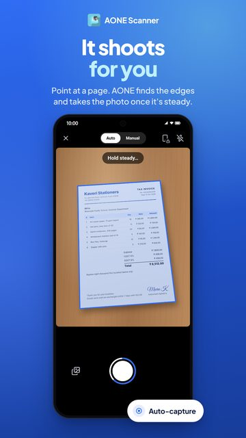
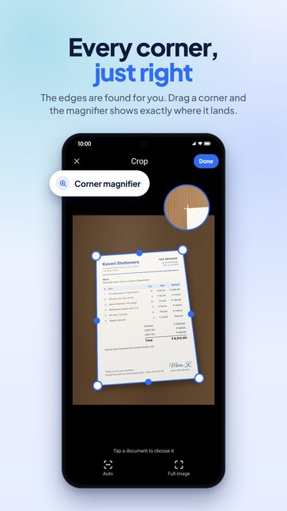
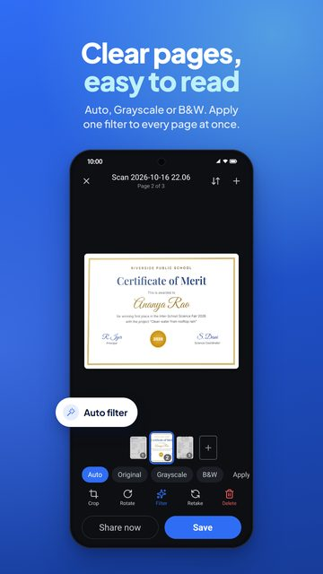
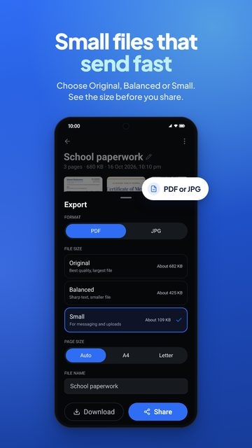
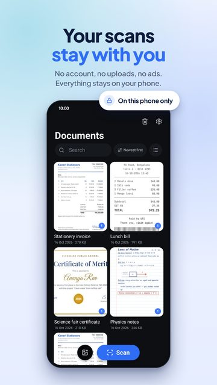

AONE Scanner
Paper in, clean PDF out.
A document scanner for Android that finds the edges and takes the photo for you. Sign and mark up pages, and make photos and signatures the exact size online forms ask for. Free, with no account and no ads.
Get it on Google PlayAndroid 7.0 or later · English and हिन्दी (हिंदी में पढ़ें)
Scans itself
Point the camera at a page. AONE finds the edges, waits for a sharp, steady shot and straightens the page. Two papers side by side become two pages; an open book or passport becomes one page per side. How scanning works
Sign and mark up
Draw, highlight, write today's date or your name, add shapes, and place your signature on any page. Add a stamp, logo or photo from your gallery. How to sign a PDF
Ready for forms
Signature and Photo modes make files at the exact pixels and KB that SSC, IBPS, UPSC, NEET, passport and visa forms ask for. Sizes for 21 forms
Stays on your phone
Scanning, editing and signing happen on the device. Your documents leave your phone only when you share them. Nothing to sign up for. More about privacy
See it






What you can do with it
- Scan forms, receipts, certificates, notes, ID cards and book pages into PDF or JPG.
- Send small files: choose Original, Balanced or Small and see the file size before you share on WhatsApp or email, or set an exact limit such as 200 KB.
- Fix pages: crop with a magnifier, rotate, reorder, retake, and pick Auto, Original, Grayscale or Black and white.
- Sign and fill: sign a PDF on page 2, write the date, highlight a line, or start from a blank page.
- Apply online: make the passport photo, signature, thumb impression and declaration a portal wants, checked against its rules.
- Bring in what you have: import photos and PDFs, including password-protected PDFs on Android 15 and later.
Guides
- Scan documents with your phone: automatic edge detection and capture
- Photo and signature size for online forms (SSC, IBPS, UPSC, NEET, visas)
- Sign a PDF on your Android phone without uploading it
- A private document scanner: offline, no account, no ads
Questions
Is AONE Scanner free?
Yes. It's free, with no ads, no in-app purchases and no account.
Does it need the internet?
No internet is needed to scan, edit, sign or export. Documents are processed on your phone.
Where are my documents kept?
In the app's private storage on your phone. They leave it only when you share a file or save it to your Downloads.
Can I sign a PDF with it?
Yes. Import the PDF or scan the paper, open the page and tap Sign. Draw your signature or scan one you made on paper, then place, resize or turn it. It's saved for next time.
Can it make my photo and signature the right size for SSC, IBPS, UPSC or NEET?
Yes. Choose Signature or Photo mode in the camera (or pick a picture from your gallery), choose the form, and AONE makes the file at the pixels and KB that form asks for and checks each rule. You can also write your name and the date on the photo.
Which languages does it support?
English and Hindi.
Is it the same as other apps called "AOne Scanner"?
No. AONE Scanner is made by amnLabs, and its Google Play package is
com.aonescan.scanner. Apps with similar names from other developers aren't related.